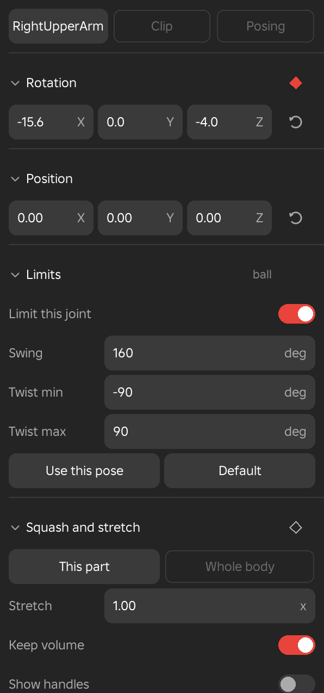
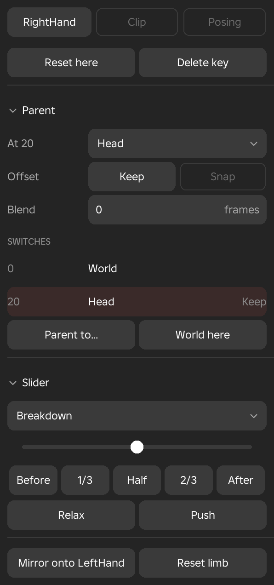
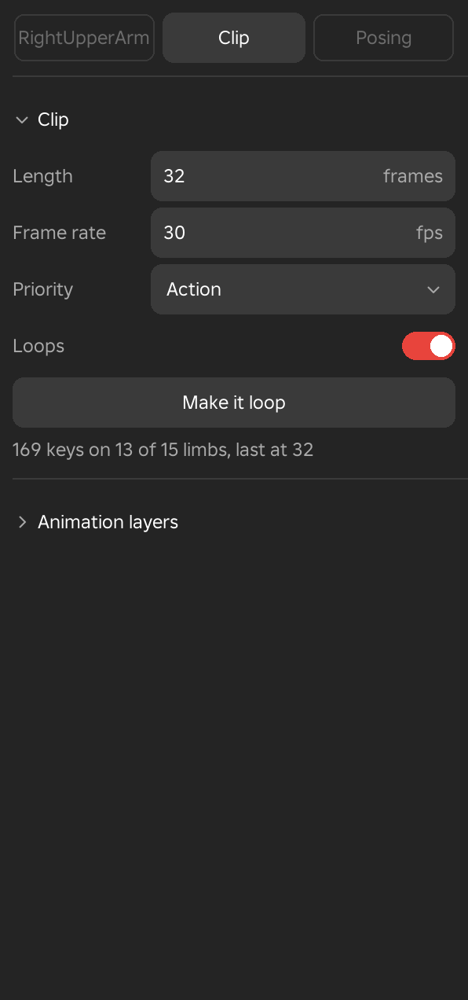
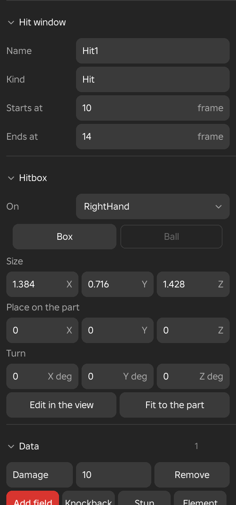

Inspector
The Inspector shows the numbers and settings of whatever is selected and lets you type them. It has up to three pages, chosen with the switch at the top. The first page is named after the selection, such as the selected limb, and is followed by Clip and Posing. The Animate workspace shows all three pages, Scene shows the first two, and Game data shows only Clip.

Working in the Inspector
Sections and Controls
- Menu
- View ‣ Windows ‣ Inspector
Every page is a stack of sections. A section folds when you click its name or the arrow beside it, and Framez remembers which ones are folded. Animation layers, Preview and In the game start folded. A short note beside a section's name, such as 2 layers or published, says what is inside while it is folded.
A page that has only one choice, such as Clip in the Game data workspace, has no page switch. The Inspector opens docked on the right the first time you use Framez, and Studio remembers whether it was open after that. Every field applies when you leave it, as one undo step.
Options
- Switches
- A setting that is on or off is a switch on the right of its row. A check with no words beside it, such as a step's tick, stays a small box in the centre. Choices laid out as a grid, such as X, Y and Z or the channels of a strip, are filled when on and outlined when off.
- Choices
- Up to five choices show as equal tiles, with the selected one filled. Six or more sit in a band.
- Numbers
- Type a value, or drag sideways on the letter or unit at the right of a number field to change it.
- Columns
- Labels sit on the left and values in the middle. Action icons, such as key diamonds and reset buttons, sit in a column on the right. A section with no action icons spreads its controls across the whole row.
The First Page
The first page changes with what is selected. Its sections are in the order described here, and a section that does not apply to the selection is left out.
The First Page
- Menu
- Inspector ‣ First page
The first page is named after what is selected. For a limb it carries the limb's name. With nothing selected it is called Key. It reads Face while a Face row is selected, Physics while a row is selected in the Physics window, and takes the name of a selected scene item, effect look, hit window or clip block.
Options
- A limb is selected
- The page shows Rotation and Position, then the sections that apply to the limb, then the Slider, and ends with the buttons Mirror onto, followed by the name of the limb's twin, and Reset limb. Typing into a field keys the limb at the playhead.
- A limb has a control
- The page opens on the Foot, Hand, Curve or Look at section of the control, ahead of Rotation, and the Leg, Arm and Parent sections do not show for a leg or an arm. A foot or hand on IK gives the page the control's name, such as Left foot. See Foot and Hand.
- One key is selected
- The page shows the same sections, but the numbers are those of the key and typing changes the key. When the key has a key after it, an Easing section is added.
- Several keys are selected
- The page shows a count such as 4 keys on 2 limbs, with the easing shared by the keys, a Timing section with Scale keys..., and the buttons Delete keys and Select none. When the keys have different easing, the easing row reads Different on each, and choosing one gives them all the same easing.
- Nothing is selected
- The page shows an At frame section with Insert key on all limbs, Copy pose and Paste, a Whole body section with Mirror pose and Reset pose, and the Slider. A line under them asks you to select a limb to see its numbers.
See Also
Pages for other selections, such as a hit window or a clip block, are described under Pages for Other Selections.
Foot and Hand
- Menu
- Inspector ‣ First page ‣ Foot
- Inspector ‣ First page ‣ Hand
- Needs
- A control rig
- Workspace
- Animate
The Foot section appears when you select a leg that has a control, and the Hand section when you select an arm that has one. It comes first on the page, before Rotation. The page of a foot or hand on IK takes the control's name, such as Left foot. The Leg and Arm and Parent sections do not show for these limbs, because this section holds their settings. They are the IK and FK switch, the Knee or Elbow number and Moves with.
A number here is keyed on the control at the playhead when you type it or drag sideways on its unit. The diamond beside it is lit on a frame where the control has a key.
Options
- IK, FK
- The switch at the top, with a key diamond beside it. Choosing a side keys the switch at the playhead and matches first, so nothing moves on that frame. From FK to IK the control is keyed where the FK limb is, and from IK to FK the joints are keyed to the IK pose. From that frame on, the chosen side leads. On the timeline, IK shows as a blue band.
- Moves with
- What the control follows from the playhead on. Body is the hips. World keeps the control still while the hips move. A part... lets you click the part it rides, such as another control's end, a part of this rig, a held object, a prop or a part of another rig. The control stays where it is when the choice changes, and later keys keep their places in the world.
- Roll
- For a foot. Turns it about the heel when the number is minus, which tips the toes up, and about the toe tip when the number is plus, which lifts the heel. It runs from -90 to 90 degrees. The roll handle in the view sets the same number.
- Tilt
- For a foot. Rolls it onto its outer edge when the number is plus and onto its inner edge when it is minus. It runs from -60 to 60 degrees.
- Swivel
- For a foot. Turns it about the ball, so the toes point in or out while the ball stays put. It runs from -90 to 90 degrees.
- Knee, Elbow
- Where the knee or elbow points, in degrees from -180 to 180. A foot shows Knee and a hand shows Elbow. The knee and elbow target in the view sets the same number.
- Switch over
- The number of frames a switch between IK and FK takes to fade, counted from the frame of the switch. At 0 the limb changes at once.
- Match IK to FK
- Keys the control at the playhead where the FK limb is, and reads the knee or elbow back from the pose. The limb stays on the side it was on.
- Match FK to IK
- Keys the joints at the playhead to the pose the control gives. If the control has no key yet, the status line asks you to key it first.
Example
For example, to plant a foot and roll it off the floor, key the foot flat at the frame where it lands, then type 40 in Roll at the frame where the heel should be up. The foot stays where it is while the heel rises.
See Also
Curve
- Menu
- Inspector ‣ First page ‣ Curve
- Needs
- A control rig with a curve control
- Workspace
- Animate
The Curve section appears when you select a joint of a chain that has a curve control, such as a tail, a cape or a rope. The control lays the chain along a smooth curve through its points. Each joint sits on the curve and turns to follow it, and the bones keep their lengths. Build control rig gives a curve to each extra chain from Rig mapping and to each unbranched run of three joints or more that no other control uses.
In the view, the points lie on the curve. Drag a point on the plane of the view to bend the chain. Before the curve has a key, the points are drawn faint along the chain, and the first drag keys every point where the chain is. Keying a joint of the chain while the curve leads keys the curve from that pose.
Options
- IK, FK
- IK lets the curve's points lead, and FK lets the chain's own keys lead. The switch is keyed at the playhead and matched, as it is for a foot.
- Moves with
- What the points follow from the playhead on. It works as it does for a foot.
- Twist
- Turns the chain about the curve, spread along its length. It runs from -720 to 720 degrees and is keyed with the curve.
- Points
- The number of points on the curve, from 2 to 5. Changing it resamples every key, so the shape is kept.
- Stretch
- Moves the joints apart or together so that the tip of the chain lands on the end of the curve. The parts keep their size. With Stretch off, the bones keep their lengths.
- Match IK to FK
- Keys the curve at the playhead from the pose of the chain. The limb stays on the side it was on.
- Match FK to IK
- Keys the chain's joints at the playhead to the pose the curve gives. If the curve has no key yet, the status line asks you to drag one of its points first.
Example
For example, drag the last point of a cape up at frame 10 and back down at frame 20. The whole cape bends along the curve between the keys.
See Also
Look at Control
- Menu
- Inspector ‣ First page ‣ Look at
- Needs
- A control rig with a Look at control
- Workspace
- Animate
The Look at control is a yellow ball in front of the face. The head turns toward the ball by the shortest swing from the pose its own keys give, and its roll is kept. The head's own keys stay, so keying the head still keys the head. The Look at section appears on the page of the head. The control has a row of its own under the head's row on the timeline.
Options
- Weight
- How much of the turn the head takes, from 0 to 100 percent, keyed with the diamond beside it. Before the first key the weight is 0, and the head turns only by its own keys. Typing a weight on a Look at control with no key puts its first key at the ball's place.
- Chest share
- The share of the turn that the chest takes before the head, from 0 to 100 percent. It shows when the head hangs from another part, such as the chest of an R15.
- Moves with
- What the ball follows from the playhead on. It works as it does for a foot.
Example
For example, drag the ball to where the character should look, then key Weight 0 at frame 0 and Weight 100 at frame 12. The head turns to the ball over those 12 frames.
See Also
Rotation and Position
- Menu
- Inspector ‣ First page ‣ Rotation
- Inspector ‣ First page ‣ Position
These two sections show the selected limb's turn and move as numbers, in the limb's own axes. X is the red ring, Y is the green ring and Z is the blue ring. Rotation is the turn about the joint, in degrees, shown with one decimal. Position is how far the joint itself has moved from its rest place, in studs, shown with two decimals.
Type an exact value into a field, or drag sideways on the letter beside the number. When a key is selected, the numbers are that key's and typing changes it. When no key is selected, typing keys the limb at the playhead. Typing a value into the torso follows the same rules as dragging it, so the settings on the Posing page for the legs and head apply.
The diamond on the Rotation heading shows whether the limb is keyed at this frame, and clicking it keys the limb here. Each section has a reset button on the right, which sets its three numbers back to 0.
Example
For example, to raise an upper arm exactly 90° sideways, select the limb and type 90 into the rotation field for the axis that swings the arm. This is more exact than dragging a ring and keys the limb at once.
Leg and Arm
- Menu
- Inspector ‣ First page ‣ Leg
- Inspector ‣ First page ‣ Arm
This section appears for a selected arm or leg and sets how that limb is posed. With FK, dragging a limb swings the whole limb from its hip or shoulder. With IK, you drag the foot or hand and the limb bends to reach it. On an R6 rig, whose limbs are single blocks, the block stays on the foot or hand and its top slides to form a knee or an elbow.
The choices are remembered for each limb.
Options
- FK, IK
- The switch at the top of the section. IK drags the foot or hand, and FK swings the whole limb.
- Foot stays planted, Hand stays where it is
- Keeps the foot or hand still while the torso moves or turns. A planted foot keeps facing the way it faced, up to an angle of 45° from the body.
- Knee, Elbow
- Sets which way the knee or elbow points, in degrees from -180 to 180, and is keyed with the pose on an R6 limb. On R6, 0 is toward the front for a knee and as swung for an elbow, and a positive number points it outward. A line under the field says where the limb's top sits, for example forward and up from the hip. On R15 the value is one angle for the whole limb, where 0 points a knee forward and an elbow back.
- Soft reach
- Shown for R15 arms and legs. It eases the limb toward straight over its last stretch, in studs from 0 to 2. At 0 the limb reaches straight at once.
Example
For example, for a crouch with both feet on the floor, switch each leg to IK, tick Foot stays planted, and lower the hips. The feet stay on the ground and the knees bend to follow.
Notes
On an IK limb, the Move mode puts the arrows on the foot or hand. Several selected IK hands or feet move by the same drag.
A leg or arm that has a control does not show this section. Its Foot or Hand section holds the IK and FK switch and the Knee or Elbow number.
Limits
- Menu
- Inspector ‣ First page ‣ Limits
- Workspace
- Animate
The Limits section sets how far the selected joint may turn while you pose. The note beside the name says whether the joint is a ball, a hinge or free. It is shown for limbs that have a parent and are not held objects. The range is kept on the joint, so it travels with the rig.
Options
- Limit this joint
- Switches the limit on or off for this joint. The other values appear once it is on.
- Swing
- For a ball joint, how far it swings from rest in any direction, in degrees from 0 to 180.
- Twist min, Twist max
- For a ball joint, how far it twists about its own length each way, in degrees from -180 to 180.
- Bend min, Bend max
- For a hinge such as an R15 elbow or knee, how far it bends each way, in degrees.
- Use this pose
- Widens the range only as far as needed to include the pose as it stands.
- Default
- Goes back to the rig's default range for this joint.
See Also
Joint Limits turns the limits on for the whole rig and describes the defaults.
Full-Body IK
- Menu
- Inspector ‣ First page ‣ Full-body IK
- Workspace
- Animate
This section sets how the body gives when Full-Body IK is on, and it is shown only while that is on. It appears for an arm or a leg, the torso and the root. The values run from 0% to 100% and are kept on the rig.
Options
- Pull
- Shown on a hand or foot. It sets how soon the body starts to help when you drag the limb. At 0% the body helps only once the limb is straight.
- Stiffness
- Shown on the torso and the root. It sets how much that part resists moving, and 100% keeps it still.
- Hips
- Shown on the root. It sets how much the hips resist moving, and 100% keeps them still.
- Planted
- Shown on the root. It sets how firmly planted feet and held hands stay. A lower value lets them give a little.
Squash and Stretch
- Menu
- Inspector ‣ First page ‣ Squash and stretch
- Pose ‣ Posing ‣ Squash and stretch ‣ Open the settings
- Workspace
- Animate
This section squashes or stretches the selected part, or the whole body, and keys the size. A note reading keyed shows beside the name once the clip has squash keys. Changing a value keys it at the playhead, and the diamond on the heading keys the size that is shown.
Options
- This part, Whole body
- Chooses what the size applies to.
- Stretch
- The size along the part's length. A value below 1 squashes, a value above 1 stretches, and 1.00 is the normal size.
- Keep volume
- Makes the part thinner as it stretches and wider as it squashes. It is on by default.
- Show handles
- Shows Roblox's resize handles on the part, so you can drag a face of the part to stretch it. Letting go keys the size.
- X, Y, Z
- Set the size along each axis for any other shape, from 0.05 to 20.
- Saved presets
- Each preset you save appears as a button. Clicking it keys that size at the playhead with the easing it was saved with, and right-clicking it deletes it.
- Save preset
- Keeps the size at the playhead, with its easing, under a name you type.
- Reset here
- Keys the normal size at the playhead.
- Delete key
- Removes the size key at the playhead.
Notes
A mesh bone cannot be scaled, so squash and stretch works on parts and on the whole body.
See Also
Squash and Stretch in the Pose menu describes the timeline row and the game script it needs.
Controllers
- Menu
- Inspector ‣ First page ‣ Controllers
- Workspace
- Animate
The Controllers section lets you drag a pose controller to blend its limbs between the poses you set for it. It lists every pose controller that is switched on, with a count beside the name, and it appears only when the clip has one. Dragging a controller keys its value at the playhead.
Options
- A slider
- A bar from -100% to 100%. The low pose sits at one end and the high pose at the other, and the middle is the clip's own pose.
- A pad
- A square. Drag the dot between four poses, Left, Right, Down and Up.
See Also
Pose Controller makes one.
Parent
- Menu
- Inspector ‣ First page ‣ Parent
The Parent section shows what the selected limb, the whole rig, a held object, a prop or a camera rides, and lists every switch of parent. It is the Inspector's side of Parent to..., which makes the switches. A switch means that from a frame on, the item follows a chosen part, stays still in the world, or goes back to its own rig.
Options
- Moves with
- For a limb, what it moves with from the playhead on. Body lets its keys lead, as normal. World keeps it still where it is while the body moves, such as a hand pressed on a wall or a foot on the ground, and the arm or leg bends to reach it. A part... lets you click the part it rides, such as a sword hilt, the other hand or a ledge. Each choice is a switch at the playhead, and the limb's parent row on the timeline shows how long each lasts. A leg or arm that has a control has this switch in its Foot or Hand section.
- At frame
- What the item rides at the playhead. Clicking it opens the same menu as Parent to....
- Offset
- Keep leaves the item where it is when the switch happens, and Snap puts it directly on the parent. Keep is not available for a switch of holder on a held object, because a holder keeps its own grip.
- Blend
- The number of frames a limb takes to ease onto its parent, from 0 to 120. A prop or camera has no Blend.
- Switches
- A list with the frame, the parent and Keep or Snap. The switch in force at the playhead is tinted. Clicking a switch goes to its frame, and right-clicking it opens Keep where it is, Snap to it, Blend over with 0, 2, 4, 8 or 12 frames, Move to the playhead and Delete. The first place of a held object cannot be deleted.
- Parent to...
- Opens the menu of parents for the item at the playhead.
- World here
- Makes the item stay still in the world from the playhead on. A limb has this on its Moves with switch instead.
Example
For example, to have a hand grab a prop and carry it, select the prop in the Scene workspace and add a switch to the hand at the frame of the grab, then add a switch to World at the frame it is released.

Slider
- Menu
- Inspector ‣ First page ‣ Slider
- Workspace
- Animate
The Slider section is the slider built into the Inspector. A list of modes sits over a bar, and you drag the knob to change the pose. The knob springs back to the middle after each drag, so a second drag works on the result of the first. The ends of the bar are 100% each way, except for the Time offset mode, where they are half the clip.
With keys selected, the slider works on each selected key against its neighbours. With none selected, it works on the selected limb, or on the whole body when no limb is selected, at the playhead.
Options
- Mode
- The list chooses what the bar does. The modes are Breakdown, Blend to neighbour, Push / relax, Blend to frame, Scale amplitude, Blend to default, Time offset, Blend to ease, Blend offset, Shear and Match slope. Each is described with the slider.
- Presets
- A row of buttons under the bar sets a fixed amount in the current mode, and clicking one keys that amount at once. They follow the mode. For Breakdown they are Before, 1/3, Half, 2/3 and After.
- Relax, Push
- Soften the pose against its neighbours, or exaggerate it, by 25% a step.
Example
For example, with Breakdown selected, press Half to key a pose exactly halfway between the key before and the key after, then drag the bar a little to push it toward one side.
Easing and Extra Turns
- Menu
- Inspector ‣ First page ‣ Easing
The Easing section sets how the limb speeds up and slows down on its way from the selected key to the next. It appears when one key is selected and that key has a key after it, and the note beside its name gives the two frames. The dropdown shows the style with a small picture of its curve, and where it slows.
Options
- Style
- Choose Steady for a constant speed, Hold to keep the pose until the next key, Smooth, Snappy, Overshoot, Bounce or Wobble. These correspond to sine, cubic, back, bounce and elastic easing in the Easing menu.
- Where it slows
- At the start, At the end, At both ends or In the middle. These rows are greyed for Steady and Hold, which have nothing to slow.
- More curves...
- Opens the full Easing window with every style and its settings.
- Extra turns
- Adds whole turns to the span, for a spin of more than half a turn. Type a whole number from -4 to 4, where a minus sign spins the other way and 0 takes the short way. A key whose curve you have shaped in the Curve editor refuses it until you choose an easing for its span.
See Also
Easing in the Key menu sets the same choice for many keys at once.
Mirror and Reset Limb
- Menu
- Inspector ‣ First page
Two buttons end the page of a selected limb. Mirror onto, followed by the name of the limb's twin as in Mirror onto LeftHand, copies the pose of the selected limb, mirrored, onto the opposite limb at this frame. A limb with no twin shows Mirror alone. Reset limb puts the selected limb, and any others selected with it, back at rest and keys them at the playhead.
See Also
Mirror Limb and Reset Limb are the same commands in the limb's right-click menu.
Several Keys
- Menu
- Inspector ‣ First page ‣ keys
When more than one key is selected, the first page has a section named by the count, such as 4 keys on 2 limbs. It holds a dropdown with the easing, where choosing a style or where it slows applies the choice to every selected key in one step, and a Timing section with Scale keys..., which opens the Scale Keys dialog. Below that are Delete keys, with the number of keys in its label, and Select none.
See Also
Scale Keys describes the dialog.
Nothing Selected
- Menu
- Inspector ‣ Key
With no limb or key selected, the first page is called Key and offers what can be done at the playhead. The At frame section, named with the current frame, has Insert key on all limbs, which keys every limb of the rig, and Copy pose and Paste. The Whole body section has Mirror pose and Reset pose. The Slider is below them.
The Clip Page
The Clip page holds the settings of the whole animation. Which sections it shows depends on the workspace: Animate shows Held objects and Animation layers, and Game data shows Preview and In the game.
Clip
- Menu
- Inspector ‣ Clip
- Edit ‣ Settings ‣ Animation settings
The Clip section holds the clip's own settings, in one place. Priority and Looping are written to the saved clip the next time you save it.
Options
- Length
- The length of the timeline, in frames. A bare number is frames, and you can also type a length such as 50f, 0.8s, or 0:50 for seconds and frames. The length can be from 0.05 to 600 seconds.
- Frame rate
- The frames per second, from 1 to 240. Every key moves to the frame that is the same moment at the new rate, so the timing does not change. If two keys of one limb would land on the same frame, the change is refused and the status line says which.
- Priority
- The animation priority that Roblox plays the clip at, chosen from Core, Idle, Movement, Action, Action2, Action3 and Action4.
- Looping
- Sets whether the clip loops, both here and in the game. It does the same as the Tab key.
- Make cyclic
- Opens the dialog that makes the last frame meet the first.
A line under the buttons counts the keys, for example 169 keys on 13 of 15 limbs, last at 32.

Example
For example, to match a skill's 0.8 second cast time at 60 fps, set Length to 0.8s. The timeline becomes 48 frames, and the keys stay where they are.
See Also
Animation Settings opens this page from the Edit menu, and Make Cyclic describes the dialog.
Held Objects
- Menu
- Inspector ‣ Clip ‣ Held objects
- Inspector ‣ First page ‣ Held by
- Workspace
- Animate
A held object is anything on the rig that is not part of the body, such as a game weapon, a part joined to the rig or a hat. This section sets who holds each one from a chosen frame on. With one held object the section is named Held by, and with several it is named Held objects, with a count beside it and a row for each object. The same Held by row also appears on the first page when a held object's limb is selected.
Each row shows who holds the object at the playhead, and clicking it opens the list of holders. The holders are the right hand, the left hand, the head, the torso, the right foot and the left foot, and Dropped, where the object stays still in the world while the body moves on. Any held object can also go on the back: the first time, its grip sits against the torso's back, turned as the object is. Choosing a holder is a switch that starts at this frame. On a rig whose parts have other names, the holders are the parts Rig mapping found.
When the clip's last switch drops or throws the object and the clip does not loop, the object stays where it landed when the clip ends in the game, such as a spear stuck in a wall.
At the switch the object stays where it is in the world, and each holder remembers the grip the object had there, so the clip plays the same wherever it is opened. The save carries a marker at each switch, which the game's scripts use to move the object on that frame.
Example
For example, in a draw animation, set the sword to Back at frame 0 and to the right hand at the frame where the hand closes on the hilt, then set it back to Back in the sheathe.
See Also
Held Objects in the Game describes the scripts that play the switches. Parent to... makes a held object ride any other part.
Animation Layers
- Menu
- Inspector ‣ Clip ‣ Animation layers
- Key ‣ Layers
- Workspace
- Animate
Animation layers hold keys of their own on top of the clip, and they are saved with it. The base is the clip's own keys. The list shows the layers with the top one first and the base last, a red dot marks the one that is active, and a muted layer is labelled muted. Clicking a layer's name makes it the one you key into. The timeline then shows that layer's keys, while the rig shows every layer together.
A layer is either additive or override. An Additive layer adds its poses on top of everything under it and follows the base wherever it goes, which suits a lean, a breath or a fix to an imported clip. An Override layer replaces what is under it on the limbs it keys.
Options
- Add layer
- Adds an additive layer on top.
- Override layer
- Adds a layer that replaces what is under it on the limbs it keys.
- Edit
- Opens the layer's menu. Additive and Override change its kind. Weight opens a dialog for the layer's weight in percent, set for the whole layer, keyed at the current frame, or faded at its ends: Fade at its ends keys the weight from 0 a number of frames before the layer's first key up to the weight, and back to 0 the same number of frames after its last key, so a fix laid over a clip eases in and out. Key weight here keys the weight at the playhead. Body mask limits the layer to some parts. Mute silences the layer without deleting it, Rename... renames it, and Delete layer removes it.
- Merge into base
- Bakes every layer into the clip's own keys for good. It shows once there is a layer.
The weight is one value for the whole layer, or it can be keyed over time. A keyed layer gets a weight row on the timeline. The body mask limits a layer to some parts of the rig, each at its own share, so an upper-body layer leaves the legs alone. See Edit Mask.
Example
For example, to add a slight lean to a finished run without touching its keys, add an additive layer, key the lean on it, and mute the layer to compare the clip with and without it.
Notes
The saved clip holds the flattened result, and the layers are kept beside it, so opening the save restores them. On an additive layer you pose with the handles. The whole-body tools in the Pose menu, such as Physics and Generate, are greyed there because they write whole poses.
See Also
Layers in the Key menu lists the same commands.
Preview
- Menu
- Inspector ‣ Clip ‣ Preview
- Key ‣ Layers ‣ Preview
- Workspace
- Game data for the Inspector section, Animate for the Key menu
Preview mutes or solos parts of the rig, and plays another animation under this one, so you can judge a clip in context. It is for watching only, and saving is not affected. A note beside the name says solo or how many parts are muted.
Options
- Legs, Torso, Arms, head
- Each has a switch with Plays, Muted and Solo. A muted part rests, or plays the base clip when there is one. With one part on Solo, the others are muted. The arms row also covers the weapon.
- Base clip
- Chooses another saved animation of this rig to play beneath this one, in a loop at its own length. Choosing Nothing plays no base clip.
- It covers
- Chooses which limbs the base clip plays on, and sits below the Base clip dropdown. The Key menu calls this choice Base clip plays on. Legs, torso always plays those limbs from the base clip, and Unkeyed fills only the limbs this clip does not key.
Example
For example, put the run under a skill's animation with Legs, torso selected to see the skill's arms over the legs they will play with in the game.
In the Game
- Menu
- Inspector ‣ Clip ‣ In the game
- Workspace
- Game data
The In the game section holds what links the clip to your game. A note beside the name says published or not published.
Options
- Asset ID
- The Roblox ID of the published animation, which the game's scripts play. You can type or paste it, with or without the rbxassetid:// prefix. The field reads Not published yet until there is one.
- Publish to Roblox...
- Saves the clip, opens Studio's upload window on it, and then asks you to choose the uploaded animation from Roblox's list so that Framez can read its ID.
- Get the ID
- Opens Roblox's list of your animations. Choosing one stores its ID with the clip.
The section also holds the options described in Also Save a _MOVING Copy and Body Mask and Masked Copies.
See Also
Publish to Roblox is the same command in the File menu.
Also Save a _MOVING Copy
- Menu
- Inspector ‣ Clip ‣ In the game ‣ Also save a _MOVING copy
- Workspace
- Game data
With this switch on, saving the clip also saves a second clip named with _MOVING added, which holds only the arms and the weapon. A game plays it over the run when a skill is cast on the move. The status line names the second clip.
When the switch is on, a _MOVING mask row appears. It starts as Arms and held objects, and you can choose other parts for the copy from the same list as a body mask.
Example
For example, a one-handed slash that has to play while the character runs is saved with its _MOVING copy, so the game uses the copy while the legs keep running.
Body Mask and Masked Copies
- Menu
- Inspector ‣ Clip ‣ In the game ‣ Body mask
- Game ‣ Body mask
- Workspace
- Game data
The Body mask row sets which parts this clip plays on in the game. Saving writes keys only for the parts in the mask, and the parts outside it play whatever plays under the clip. The clip keeps all its keys in Framez.
Below it, each masked copy has a row of its own. A masked copy saves another clip from the same keys beside this one, with its own name ending and mask, and it is written every time you save.
Options
- Body mask
- Whole body, Upper body, Lower body, Arms, Legs or Head, then More masks for Left arm, Right arm, Left leg, Right leg and Arms and held objects, then your own masks, and Edit mask... to make one.
- Copy
- A text box with the copy's name ending, such as _UPPER, and a button showing its mask. The button opens the mask list with a row to Delete the copy. An ending must not be empty or _MOVING.
- Add a masked copy
- Lists Upper body, Lower body, Arms, Legs, Head and your own masks. Choosing one adds a copy with an ending of _UPPER, _LOWER, _ARMS, _LEGS or _HEAD, or _MASKED for your own mask, with a number added when the ending is taken.
Example
For example, a melee attack masked to Upper body plays over a run or a walk in the game, while the legs keep running.
See Also
Body Mask in the Game menu has the same choices.
Edit Mask
- Menu
- Any body mask list ‣ Edit mask...
Edit mask makes a mask of your own. It opens a dialog with the rig's parts as a tree. Each part has a tick and a share from 0% to 100%, where 100% plays all of the part and 50% plays half of it. A mask with every part at 100% is the whole body, which is the same as no mask.
The parts that are in the mask are shown in red on the rig. You can also click a part in the viewport to add it to the mask or take it out.
Options
- Name
- The name of the mask.
- Start from
- Fills the mask from Whole body, one of the starting masks, one of your own saved masks, or Nothing.
- Part ticks and shares
- Switch a part on or off and set its share.
- All below
- Gives every part under a part the same share as that part.
- Keep in My masks
- Saves the mask so it is listed under My masks in every place.
- Use mask
- Applies the mask and closes the dialog.
Notes
The starting masks come from the rig's own joints, so they exist for R6 rigs, R15 rigs and any rig described with Rig mapping.... In the game a part plays fully or not at all, so any share above 0 counts as in. Shares between 0% and 100% apply in Framez's layers and clip blocks, which have masks of their own.
The Posing Page
Posing
- Menu
- Inspector ‣ Posing
- Workspace
- Animate
The Posing page sets how the rest of the body behaves while you pose one part. Its settings are kept between sessions.
Options
- Legs, when the torso moves
- Three tiles. Follow torso moves the legs with the torso. Stay upright makes each leg keep its angle. Feet planted keeps the feet where they are.
- Knees bend (IK)
- Bends the knee to reach a foot you drag.
- Head, when the torso turns
- The switch Keeps facing the same way holds the head's direction while the torso turns. When it is off, the head turns with the torso.
- Both sides
- The switch Mirror while posing makes posing one limb pose its twin, mirrored.
- Handles
- The switch Swing ball at hands and feet shows the white ball at the end of a limb in the Rotate mode. Dragging the ball swings the whole limb.
Example
For example, tick Feet planted while you pose the hips, so the feet stay on the floor as the body moves, and use Mirror while posing to keep a stance symmetrical.
Pages for Other Selections
Some selections open a page of their own on the Inspector's first page. This part describes the pages of hit windows, clip blocks and physics rows.
Hit Window Page
- Menu
- Inspector ‣ Hit window
- Workspace
- Game data
When you select a hit window, the Inspector shows its page, titled with the window's kind, for example Hit window or Parry window. In the Game data workspace, where Clip is the only page, the hit window's page replaces it while the window is selected. In other workspaces it is shown on the first page.
Options
- Name
- The window's name.
- Kind
- The kind of window, for example Hit, Parry, Block, Invulnerable, Cancel or Combo, or any name you type. It decides the names of the markers the save writes.
- Starts at, Ends at
- The first and last frame of the window.
- On
- Under Hitbox, the part or held object the hitbox moves with, or No hitbox.
- Box, Ball
- The shape of the hitbox.
- Size
- The size of the hitbox along X, Y and Z. A size is never below 0.05.
- Place on the part
- Moves the hitbox from the part's centre along X, Y and Z.
- Turn
- Turns the hitbox about X, Y and Z, in degrees.
- Edit in the view
- Makes the hitbox a real part in Studio's selection, so Studio's Move, Scale and Rotate tools can change it.
- Fit to the part
- Sets the hitbox to the size of its part and clears its place and turn.
- Data
- Any fields and values the game reads, such as Damage 25 or Element Fire. Each row has a Remove button. Add field adds a new row, and chips for Damage, Knockback, Stun, Element and Tag add the common ones. Damage starts at 10.
- Duplicate, Delete
- Copy or remove the window. Del also deletes it, and Esc lets go of it.

See Also
Hit Windows describes how to add them and how the game reads them.
Clip Block Page
- Menu
- Inspector ‣ Block
- Workspace
- Animate
Selecting a clip block opens its page. A block is another clip that plays over your keys, and a generated walk is a block too. The first section is named Block, or Walk for a walk, and its first line gives the block's name and the frames it covers. The second section, Blend, sets how the block mixes with what is under it.
Options
- Starts at
- The timeline frame where the block begins.
- Trim in, Trim out
- For a clip block, the first and last frame of the source clip that the block uses.
- Loops
- How many times the block repeats, from 0.25 to 50.
- Speed
- How fast the block plays, from 5% to 1000%.
- Walk, Run
- For a walk of Framez's own, a switch between the two gaits. Choosing one sets a matching pace.
- Stride
- For a walk made from one of your clips, a line that reads the clip's stride in studs and the seconds one loop takes.
- Pace
- For a walk of Framez's own, how many studs a second the rig travels, from 0.5 to 60. For a walk made from one of your clips, a percentage of the clip's own speed, from 10% to 400%.
- Ease
- For a walk, the frames it takes to get up to pace and to stop, from 0 to 120.
- From, To
- For a walk, which stretch of the path it covers, as a percentage from 0% to 100%.
- Blend
- Replace plays the block over what is under it. Add puts the block's motion on top of what is under it.
- Weight
- How much of the block plays, from 0% to 100%.
- Blend in, Blend out
- The frames the block takes to fade in and out at its ends, from 0 to 600. A list beside each sets the curve of that blend: Linear, Smooth, Ease in or Ease out.
- Match
- For a clip block, Root, Feet or None. Root starts the block from where the block before it ended, in place and in turn. Feet does the same and keeps the foot that is down where the block before ended. None plays the block where it was keyed.
- Reverse
- For a clip block, plays the clip backwards.
- Holds its last pose
- Keeps the last pose of the block after it ends.
- Body mask
- The parts the block plays on.
- Replace with...
- For a block of a saved clip, lists the other clips on the rig. The clip you choose takes the block's place, and the block keeps its start, blends, Match, Body mask and row.
- Bake to keys, Delete
- Bake to keys turns the block into ordinary keys, and Delete removes the block.
See Also
Clip Block describes how to add one, Clips Rows describes the rows, and Follow Path describes walks.
Physics Page
- Menu
- Inspector ‣ Physics
When you select a row in the Physics window, the Inspector opens on a Physics page with the values of that row. What the page shows depends on the row.
Options
- A body part
- Mode, which is Simulated or Plays its keys, and Strength over the clip as a curve. It also shows Mass, Friction and Bounce, and the joint's Swing and Twist from and to, or Bends from and to for a hinge. Two buttons, Use the region's values and Reset the joint, go back to the defaults.
- Hold its place
- Hold over the clip, a curve for how hard the body is pulled to where its keys put it. At 0 it falls freely.
- A force
- Its frames. A push has a part, an aim and a speed. Wind has Strength, Radius, Gusts and A gust every. A pull, blast, lift or black hole has Strength, with a drawn path for its centre. Every force except Drag also has a Radius and a Falloff to the edge.
- Colliders
- Hits chooses The whole place or Selected objects only. With the second choice, And the floor under the rig and an Objects list appear.
- Settings
- Start at, Up to, Stop when it comes to rest, Keep the motion at the start, Gravity, and Blend back into the clip.
See Also
Physics Window and Forces describe the values.
Pages for Other Selections
- Menu
- Inspector ‣ First page
Several other selections give the first page a layout of their own. These are described with the feature they belong to.
Options
- A Face row
- Shows the face map and the sliders of the face. See Face Map.
- A scene item
- A prop, camera, light or sound shows its look, colour and other values, and a Parent section where it can ride another part. See A Prop's Look.
- An impact or flash
- Shows the look of the effect, in the sections Look, Steps, World, Figures, Who and Timing. See Impact Frame Here.
- A subtitle block
- Shows the text and timing of the line. See The Subtitle Page.